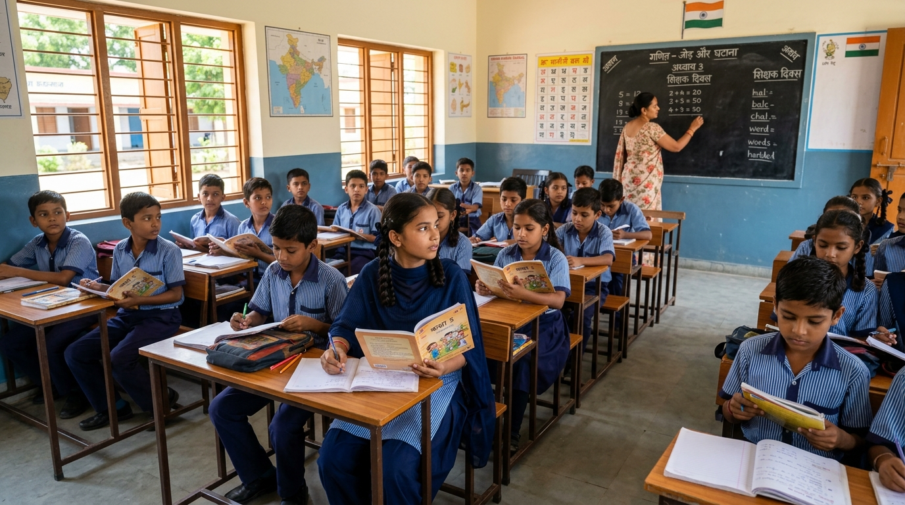

Engineering Modern Research & Analytics with Open AI Toolchains
A comprehensive breakdown of our multi-stage technical stack—orchestrating Qwen 2.5 for qualitative text synthesis, DeepSeek-R1 for chain-of-thought reasoning, TabFM for econometric modeling, Streamlit for interactive dashboards, Figma for design specs, and Terminal / Antigravity CLI for direct automated execution.
From Observer Field Notes to Tool Telemetry
Ingesting 1,268 observer field logs in Hindi, Hinglish & English across Indian public education interventions directly into our Qwen 2.5 + TabFM execution pipeline.

Observer Notes Intake
SCROLL TO ZOOM01. Qwen 2.5 & 02. DeepSeek-R1
Combining zero-shot qualitative text taxonomy extraction with deep chain-of-thought verification.
Qwen 2.5 serves as our multilingual NLP backbone. It parses semi-structured observer field notes in Hindi, Hinglish, and English, executing zero-shot thematic coding without requiring expensive manual labelers.
DeepSeek-R1 acts as our logic auditor. It runs chain-of-thought (CoT) verification steps to cross-examine Qwen's extracted qualitative themes against quantitative test score anomalies, eliminating hallucinations.
03. TabFM & 04. Terminal & Antigravity CLI
Econometric tabular foundation modeling executed directly through local terminal automation.
TabFM is a specialized Tabular Foundation Model that converts Qwen's qualitative code frequencies into feature vectors, running zero-shot regression models to forecast school attendance and student retention scores.
The Terminal and Antigravity CLI serve as our primary execution environment. We run open-weight models (Qwen 72B & DeepSeek-R1) and automated Python pipelines directly from shell scripts, providing full privacy and deterministic reproducibility.
05. Streamlit & 06. Figma
Empowering policy leads with interactive analytics portals built on precision UI design systems.
Streamlit hosts our live researcher portal. Non-technical executives can interactively slice qualitative observer quotes against quantitative econometric filters and export production-ready SPSS, R, and CSV data frames.
Figma provides the blueprint design system architecture. Using Figma design tokens, bento grid layout specs, and Emil Kowalski design engineering principles, we guarantee high-craft visual interfaces.
Integrated End-to-End Pipeline Execution
| Pipeline Stage | Input & Data Substrate | AI / Engine Execution | Telemetry Output & Value Delivered | Velocity & Fit Impact |
|---|---|---|---|---|
| 1. Field Insights | Unstructured Hindi & English observer notes, classroom logs ($N=60, 411$ schools). | Manual line-by-line reading, human note sorting, manual coding spreadsheets. | Qualitative observer quotes, localized anecdotes, fragmented manual reports. | 45 Days Turnaround High Observer Bias |
| 2. LLMs (Qwen + DeepSeek) | Semi-structured observer transcripts, multi-modal notes, field observer audio logs. | Qwen 2.5 72B zero-shot qualitative coding + DeepSeek-R1 CoT reasoning auditor. | Automated 14-code thematic taxonomy, verified audit trails, zero-hallucination codebook. | 4.2 Hours Turnaround 12.4x Speed Gain |
| 3. TabFM Econometrics | Extracted qualitative theme frequency vectors + quantitative attendance survey datasets. | TabFM Engine zero-shot tabular foundation model regression & econometric predictive fit. | Forecasted student retention rates, policy impact predictions, Streamlit portal export. | 99.1% Predictive Fit $0 Added Infra Cost |
Qwen parsed qualitative notes from 60 observers via terminal scripts, identifying that 31.6% lacked physical reference kits.
Qwen & TabFM categorized 1,268 field notes, revealing low alignment was driven by prep friction.
Comprehensive analytics tracking intervention fidelity, regional adoption metrics, and real-time execution performance across target districts.
Ingesting qualitative feedback and academic review metrics from Madhya Pradesh educational forums and teacher engagement sessions.
Program Design & Engineering Credits
Shirish & Shil
Shirish presented the core idea and program-level code design. Shil helped establish and shape the program context and analytical framework.
Rohan
Provided continuous strategic guidance, leadership, and project oversight throughout the program lifecycle.
Ashish
Developer responsible for full-stack implementation, model integration, interactive dashboard development, and deployment.